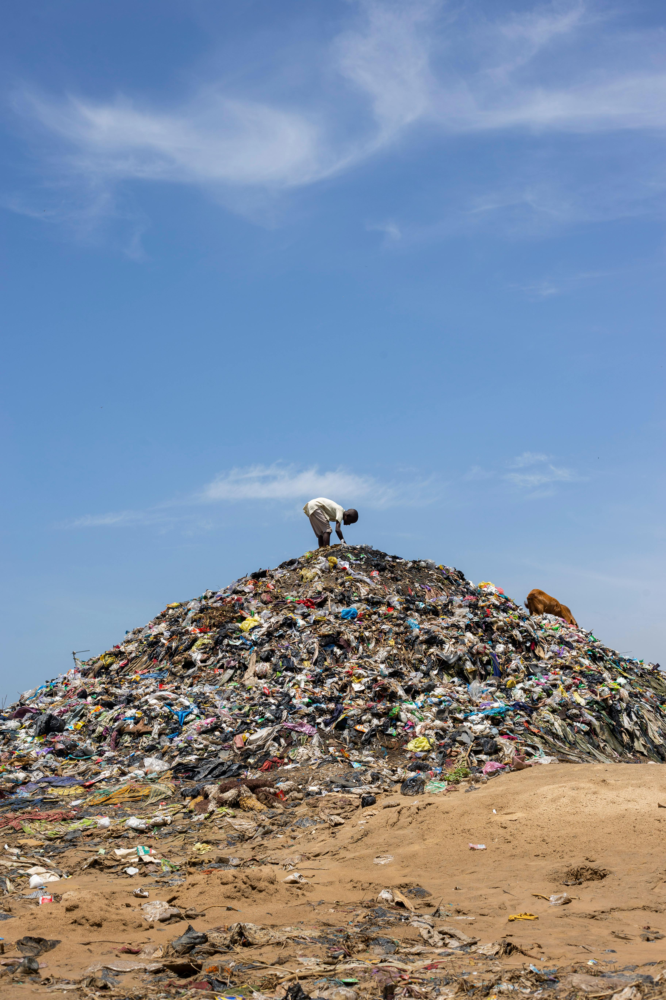
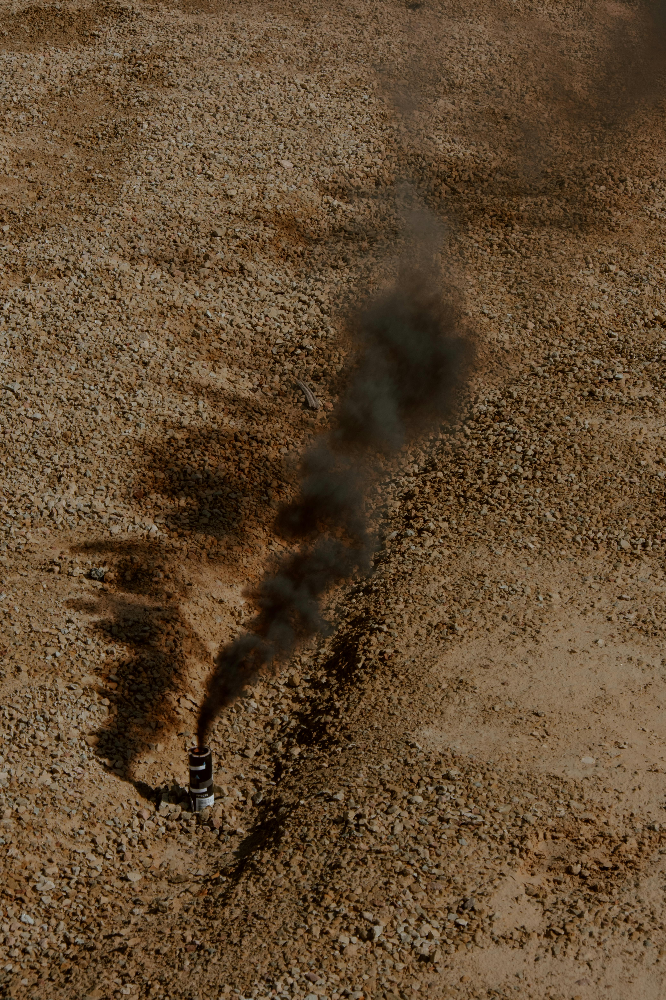
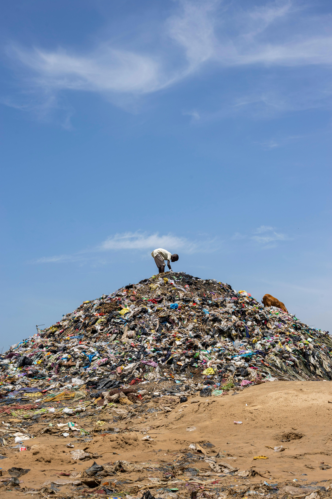
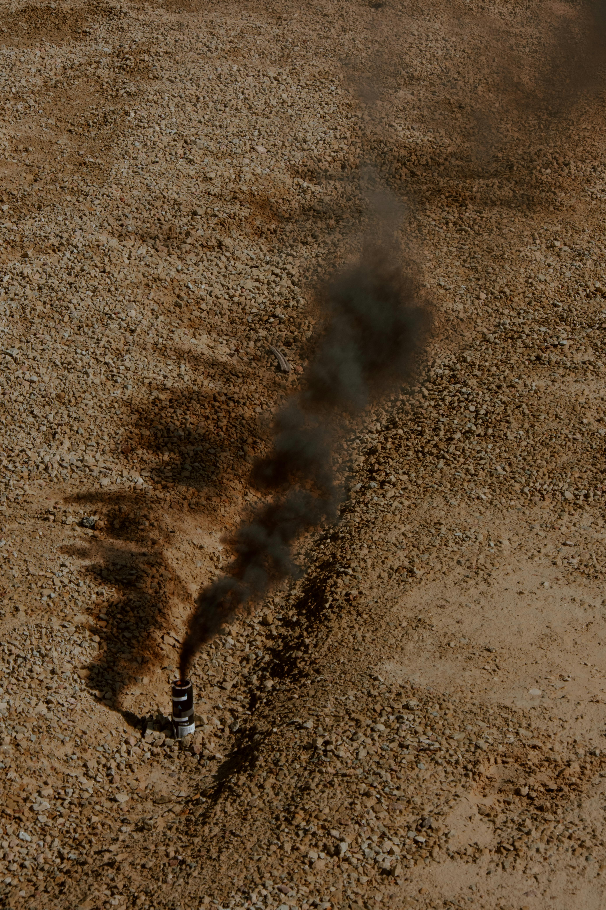

SOIL POLLUTION
 



In a general sense, soil pollution definition is the presence of toxic chemicals (pollutants or contaminants) in soil in high enough concentrations to be of risk to human health and/or ecosystem.Additionally,even when the levels of contaminants in soil are not of risk, soil pollution may occur simply due to the fact that the levels of the contaminants in soil exceed the levels that are naturally present in soil (in the case of contaminants which occur naturally in soil).
Soil pollution refers to the contamination of soil with anomalous concentrations of toxic substances, posing a serious environmental concern and health hazard. It occurs when human activities release pollutants into the soil, altering its natural composition and ecosystem. Causes of Soil Pollution: Industrial activities: Industrial waste, heavy metals, and chemicals can contaminate soil through improper disposal or leakage from factories and storage facilities. Agricultural practices: Excessive use of pesticides, fertilizers, and manure can pollute soil and groundwater. Urbanization: Urban runoff, sewage, and construction waste can contaminate soil and groundwater. Mining and drilling: Mining and drilling activities can release heavy metals and chemicals into soil and groundwater. Waste disposal: Improper disposal of municipal waste, including household hazardous waste, can contaminate soil. Types of Soil Pollutants: Heavy metals: Lead, mercury, arsenic, and chromium can accumulate in soil and pose health risks. Organic pollutants: Pesticides, herbicides, and industrial chemicals can contaminate soil and groundwater. Nanoparticles: Microplastics and nanoparticles can enter soil through wastewater and agricultural runoff. Radioactive materials: Nuclear accidents and waste disposal can contaminate soil with radioactive isotopes. Effects of Soil Pollution: Human health risks: Exposure to contaminated soil can cause cancer, neurological damage, and reproductive issues. Ecosystem disruption: Soil pollution can harm beneficial microorganisms, plants, and animals, disrupting ecosystem balance. Food security: Soil pollution can reduce crop yields, contaminate food, and threaten global food security. Water pollution: Contaminated soil can leach pollutants into groundwater and surface water, affecting aquatic ecosystems. Control and Remediation of Soil Pollution: Source reduction: Minimize pollutant generation through sustainable practices and waste reduction. Proper waste disposal: Ensure safe and regulated disposal of waste, including hazardous waste. Soil remediation: Excavate and treat contaminated soil, or use bioremediation techniques to degrade pollutants. Monitoring and regulation: Establish and enforce regulations to prevent soil pollution, and monitor soil quality to detect and respond to contamination. Prevention is Key: Preventing soil pollution through sustainable practices, proper waste management, and regulations is crucial to protecting human health and the environment. By understanding the causes and effects of soil pollution, we can work together to mitigate its impacts and ensure a healthier, more sustainable future.